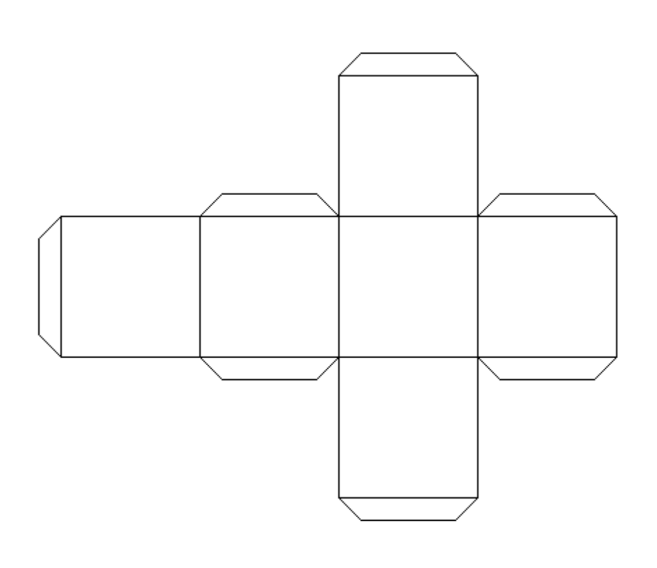
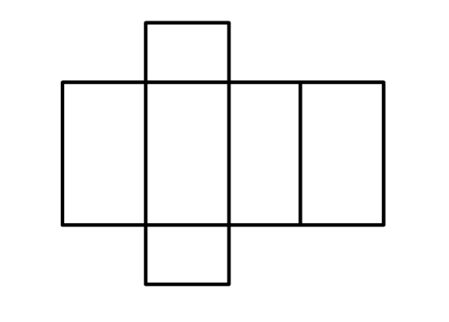
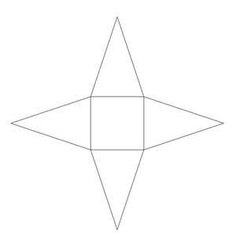
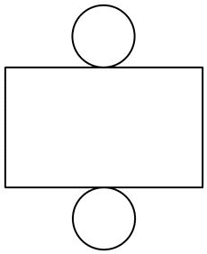

What Is a Net of a 3D Shape?
A net is a 2D pattern that you can fold to make a 3D shape.
Think of it as a "unfolded" version of a 3D shape.
A net helps visualize how the faces of a 3D shape come together to form its structure.
Net of a Cube
Cube:
A cube has 6 square faces.
The net for a cube looks like a cross made of 6 squares arranged in a way that they can fold into a cube.

Net of a Rectangular Prism
Rectangular Prism:
A rectangular prism has 6 rectangular faces.
The net for a rectangular prism is made up of 6 rectangles arranged in a pattern that will fold into a 3D box.

Net of a Pyramid
Pyramid:
A pyramid has a square base and 4 triangular faces.
The net for a pyramid has a square with 4 triangles connected to its edges, which fold up to form the pyramid.

Net of a Cylinder
Cylinder:
A cylinder has 2 circular faces and 1 rectangular face for the side.
The net for a cylinder consists of 2 circles (for the top and bottom) and 1 rectangle (for the side), which fold into the cylindrical shape.
